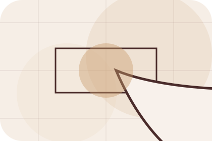
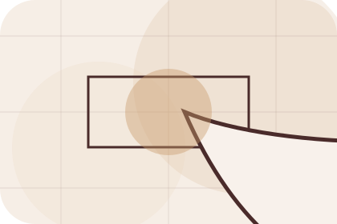
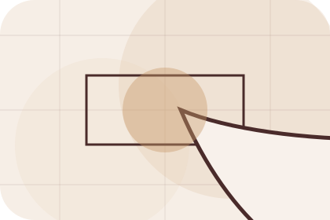
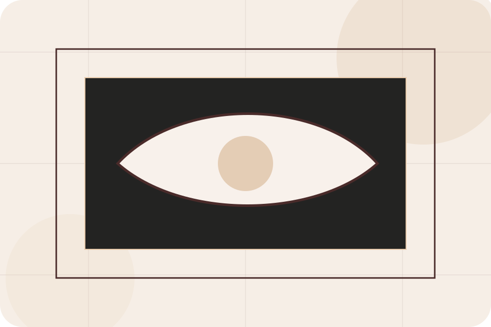
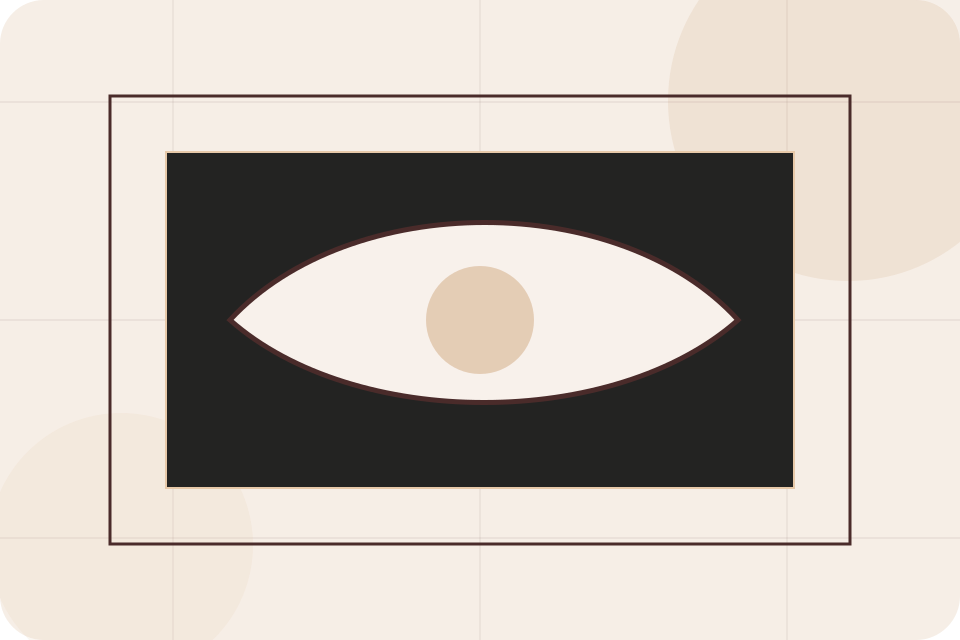
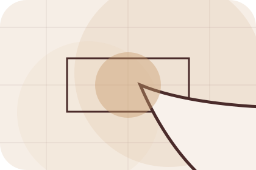
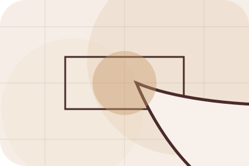
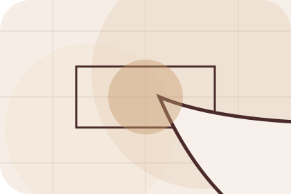
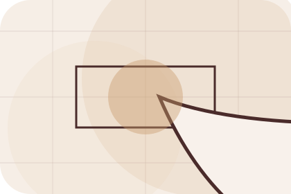

Context
Vision gives the page a specific angle instead of repeating the navigation label.
Interiors
Luxury material moodboard for taste and home confidence.

Home / 03
Problem frames the pressure behind the visit, then connects it to a practical path visitors can recognise and act on.
The copy avoids blame and panic. It shows the common friction, the practical consequence, and the calmer route Room uses to move people forward.
Open ServicesProblem names the real friction visitors bring to the home route, so the page feels relevant before any claim is made.
The copy connects that friction to practical risk, delay, confusion, or missed opportunity without exaggerating it.

The final cue moves visitors toward a clearer route instead of leaving them with the problem alone.
Home / 04
Promise defines the better state Room is built to create, with enough detail to make the promise believable.
A material-led interiors site with luxe moodboards, serif headlines, room selectors, and sourcing CTAs. The section grounds that direction in concrete benefits, visible tradeoffs, and a next route visitors can use when the promise feels relevant.
Open RoomsPromise defines what becomes clearer, easier, or safer when Room is the chosen route.
The benefit is tied to taste and home confidence, not a vague quality claim.
Visitors get a linked path to compare the promise against services, standards, or examples.
Home / 05
Rooms explains the practical scope, best-fit situations, and expected outcome so interiors visitors can compare options without decoding jargon.
The section keeps the offer concrete: what is included, who it is best for, what decision it supports, and which linked route gives the deeper detail.
Open ProjectsWho should use rooms and when it belongs in the home journey.
The practical benefit visitors should expect after choosing this route.
Where to compare details, pricing, support, or contact options before committing.
Editorial room hero
Select the closest route and Room keeps the next step, proof, and follow-up expectation aligned with taste and home confidence.
Home / 06
Projects adds commerce context to the home route, using the luxury material moodboard structure to support taste and home confidence before visitors choose a next step.
Room uses material mood cards and focused copy to make the decision easier to scan, aligning the section with taste and home confidence rather than filling space.
Open Shop
Projects gives the page a specific angle instead of repeating the navigation label.


Home / 07
Shop adds commerce context to the home route, using the luxury material moodboard structure to support taste and home confidence before visitors choose a next step.
Room uses material mood cards and focused copy to make the decision easier to scan, aligning the section with taste and home confidence rather than filling space.
Open Pricing
Shop gives the page a specific angle instead of repeating the navigation label.
Home / 08
Reviews converts customer proof into a useful buying signal: the problem, the experience, and what changed afterward.
Proof stays believable by focusing on situation, service experience, and practical change rather than vague praise or unsupported results.
Open JournalWhat the visitor needed before choosing Room, written with enough context to feel real.

How the service, product, or support felt during the process, not just that it was good.

What became easier to decide, complete, buy, book, or trust after the interaction.
Home / 09
Questions handles buying doubts directly so visitors can understand timing, fit, limits, and the safest next step.
Answers are short by design: enough to remove hesitation, not so much that the page turns into documentation before the visitor can act.
Open ContactQuestions gives the page a specific angle instead of repeating the navigation label.
The material mood cards show what to compare, what to avoid, and what matters most for interiors, furniture & home design visitors.

The final cue points to a useful internal route so the section keeps the journey moving.
Room starts with a focused intake so the recommendation matches the visitor's context, risk, timing, and readiness.
Each route explains inclusions, exclusions, documents, timing, and the decision points that affect final delivery.
The theme uses luxury material moodboard, material mood cards, and moodboard filter, room selector, material palette interaction rather than a shared template rhythm.
Editorial room hero
Select the closest route and Room keeps the next step, proof, and follow-up expectation aligned with taste and home confidence.
Home / 10
Room closes the home route with a clear action, a quick reminder of the value, and a low-friction way to start the design.
Visitors who are ready can use the primary action. Visitors who are still comparing can scan the section links, proof, and support routes before they start the design.
Start DesignThe final block keeps the choice simple: act now, compare one more proof route, or send enough detail for a focused response.
Start Designtaste and home confidence
A material-led interiors site with luxe moodboards, serif headlines, room selectors, and sourcing CTAs. Home ends with a direct path to start the design, plus enough context for visitors who still need to compare.
 Start Design
Start Design